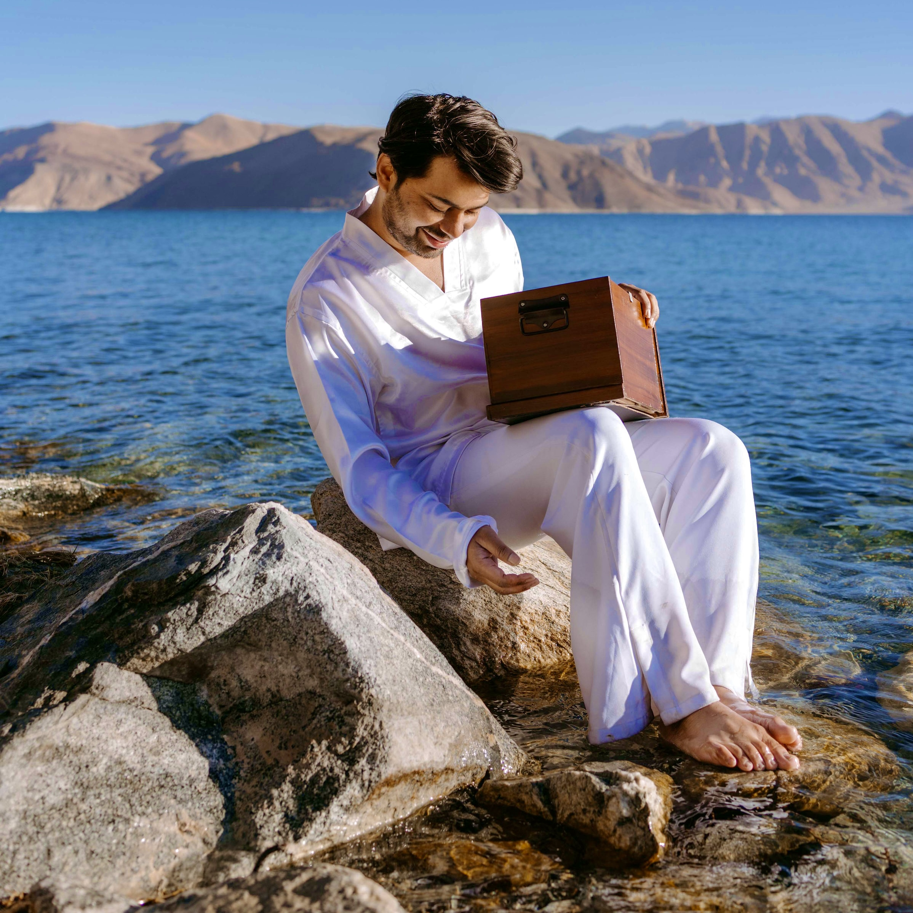

Aagman, Born in Silence,
Heard by the World.
In the silent grandeur of Ladakh, where mountains stand like ancient kings and the wind moves with the grace of a royal procession, I found my truest rhythm. This land did not speak in words, it spoke in silence, in stillness, in soul. Aagman was born from that noble quiet, where patience became poetry and music became destiny.
authored by Debanjan Biswas

In the silent grandeur of Ladakh, where mountains stand like ancient kings and the wind moves with the grace of a royal procession, I found my truest rhythm. This land did not speak in words, it spoke in silence, in stillness, in soul. Aagman was born from that noble quiet, where patience became poetry and music became destiny.
authored by Debanjan Biswas